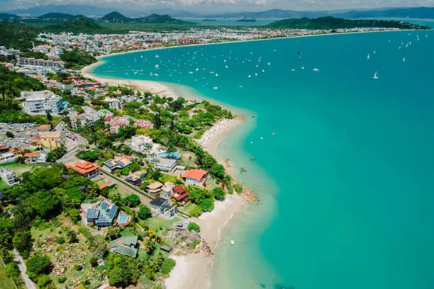

Best Beaches in Santa Catarina

Santa Catarina is home to some of the most stunning beaches in Brazil. Here are the top beaches you must visit:
- Praia do Campeche (Florianópolis): Known for its clear waters and surfing spots.
- Praia da Joaquina (Florianópolis): Famous for its sand dunes and vibrant nightlife.
- Praia do Rosa (Imbituba): A paradise for nature lovers and whale watchers.
- Bombinhas: Perfect for diving and snorkeling with its rich marine life.